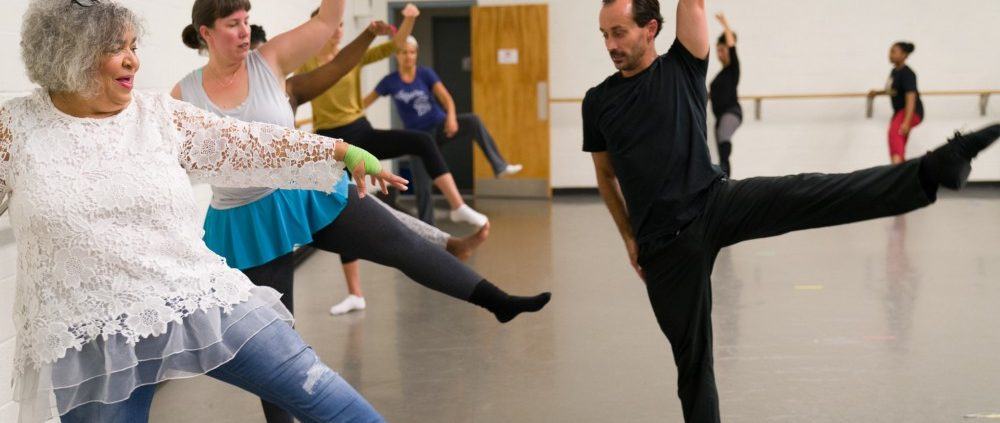

Ballet is only for small girls in pink tutus? Not at all! Becoming a professional ballet dancer includes a lot of sweat, tears and blood. It is one of the most physical demanding dance forms. But as an adult starter it can be much fun too! Have a look at the great benefits dancing ballet provides and why you should try it out as your new hobby!
Don't worry your feet won't look like this lol
Most people think of a ballerina in a pink tutu when they first hear the word "ballet". So many don't know how much demanding physical and mental work is put in to make it look so effortless. Dancing ballet is a unique art that requires as much effort as athletes need to put in. Dancing ballet as a hobby has a lot of benefits:
Don't wait any longer. Ballet is for everyone, and it might just be the hobby you've been looking for!
